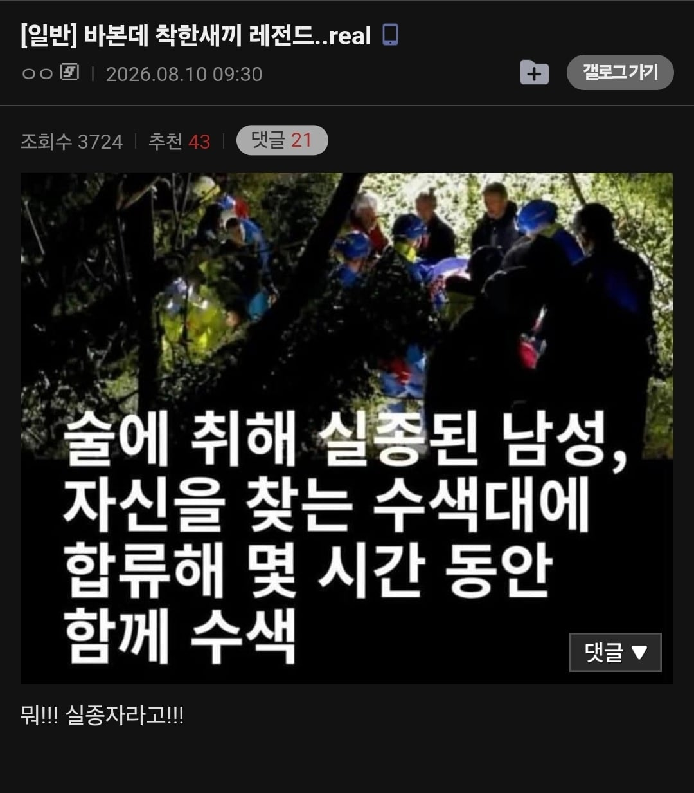

ㅋㅋㅋㅋ

ㅋㅋㅋㅋ
모전구렴야게이 어떻게 중장까지 진급함...?
주 이유는 무다무다게이가 출세코스 밟는건 나름 잘했음
황본도 지금 육군처럼 그런게 심했음 뭐 육사출신이면 무조건 어디까지는 뒤 봐준다 그런거
ㄹㅇ가끔식 사람들이 원피스 때문에 중장이 좃으로 보이는 경우가 있는데 엄청 높은 직급임..
뭐야 ㅋㅋㅋㅋㅋㅋㅋㅋㅋㅋㅋ
저거뉴스 존나 웃김
술에취해 숲속에서 잠듬->시끌벅적한 소리에 깨서 가봄->뭐?! 실종자가있다고?!->같이 합류해서 찾아나섬
근데 찾는게 자신이었음 ㅋㅋㅋ


철학적이군
나 자신을 찾는 수색
나는 무엇인가
나에게로 떠나는 여행
예? 실종자요? 제가요?
알포인트 ㄷㄷ
늦었지만 찾아서 다행이네
애는 착혀~
뒤통수 존나 맞았을듯
알포인트.... 하늘소...
너네 총원이 멏명이야!?
여보세요 어? 잠깐만. 나 전화잃어버린거 같애. 어떡해. 전화 찾으면 다시 전화할께.
지신을 찾아떠나는 여정이라..
십이지신
맞아 같이 찾아줘야지. 사람이 실종됐다는데
뭐? 뭐 어디? 어딧어? 왜 뭐?
나를 찾아 떠나는 여행
https://n.news.naver.com/article/023/0003643780
2021년 터키에서 있었던 일이네
ㅋㅋㅋㅋㅋㅋㅋㅋㅋㅋㅋㅋ
나 자신을 찾으러 떠났어요
나를 찾는 여정
네? 저라구요?
불교적이네요
중일전쟁이 이렇게 시작 됐었지